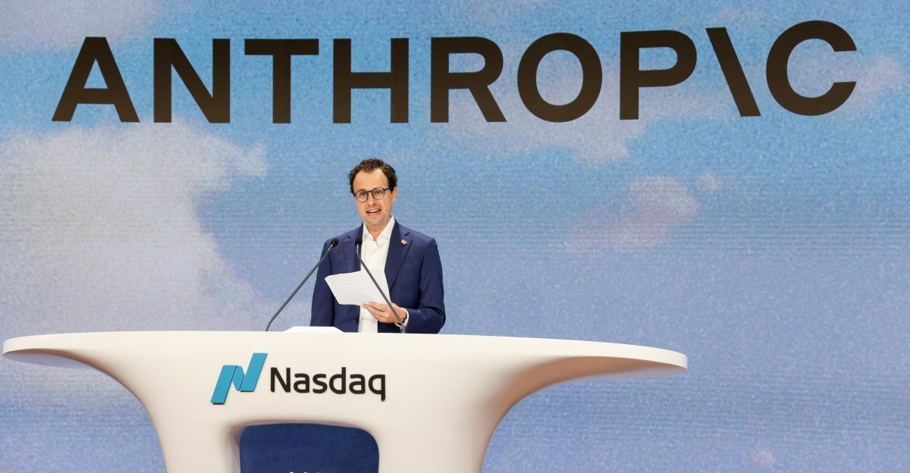
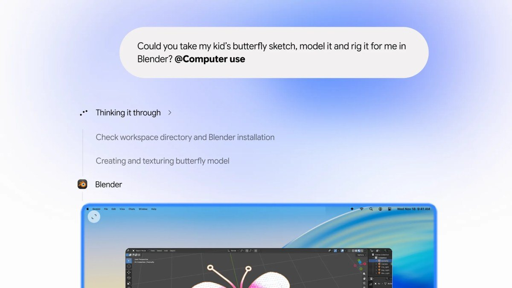

头条 一
Anthropic 纳斯达克开盘 111.5 美元，高于 83 美元发行价

Anthropic 11 月 19 日以代码 ANT 在纳斯达克开盘，报 111.5 美元，发行价 83 美元对应完全稀释市值约 1.5 万亿美元。阿莫迪开盘前说，会放慢训练和部署的节奏，直到确信系统安全、仍受人类控制。
The Verge 指出，招股书把“自我保存”、不按预期行事列为风险。上市后，这套“放慢”的承诺要接受股东的检验。
来源：The Verge
Anthropic 开盘 / Gemini 接管 Mac / Muse 串号
Anthropic 首日开盘报 111.5 美元；谷歌让 Gemini 在 Mac 上替你操作电脑；Meta 的 Muse 被曝在不同账户间串话。

Anthropic 11 月 19 日以代码 ANT 在纳斯达克开盘，报 111.5 美元，发行价 83 美元对应完全稀释市值约 1.5 万亿美元。阿莫迪开盘前说，会放慢训练和部署的节奏，直到确信系统安全、仍受人类控制。
The Verge 指出，招股书把“自我保存”、不按预期行事列为风险。上市后，这套“放慢”的承诺要接受股东的检验。

谷歌 11 月 19 日为 Mac 版 Gemini 加入电脑操控，可在后台操作本地应用、浏览网页，用户在对话里看实时预览，能暂停、停止、批准。目前仅限美国英语，需 Google AI Plus、Pro 或 Ultra 订阅，扩展时间未定。
TechCrunch 称谷歌来得偏晚，OpenAI、Anthropic、Meta 的桌面应用早有类似功能。竞争点已从能不能做，转到权限怎么给。
据路透查阅的 Meta 内部帖子，员工称 Muse 会弹出自己没问过的消息，包括从未下过的订单和不属于自己的银行余额。Meta 回应说员工用的版本与公众版不同。Muse 9 月上线，下载量已超 1000 万。
口径是内部员工的反馈，不等于公众版同样出问题。但智能体要读多个应用，串号一次，就是隐私事故。
据彭博发现的职位描述，还不是产品。
入口前移，搜索与聊天的界线更模糊。
据 The Information，随身屏幕设备。
两路 4K 60 帧，离落地还早。
IT 之家转述，微信助手小微数据另披露。
量子位报道，围绕首份离任后财报。
46 天完成，量子位报道。
“1 厘米标尺 12 个刻度”引发争议。
称仅涉营销数据和邮箱，支付系统未受影响。
来自 Codeberg 官方帖，原因待其说明。
整理表不再阻断业务，运维少一个停机窗口。
公共 DNS 不愿替版权方封链接。
上市当天先谈放慢，是把安全当成卖点；股东要的增长会不会与它冲突，要看后面几个季度。
Gemini 晚到 Mac，却把预览、暂停、批准做进首发，权限设计正在成为产品的一部分。
Muse 的事提醒：智能体的风险不在答错，而在它读到了不该读的账户。